Progress Report for Peter Sumner
Week 3:
Date: 9-9-2020Total hours: 6
Description of design efforts:
 Figure 1: Constellation of Orbiting Satellites [1] |
Only basic functionality of a GPS is needed to receive coordinate and alititude data as required for the project. Since the GPS
requirements are minimal, the feature I determined to be most important was power consumption. The goggles will be battery operated for hours at
a time and selecting low power components is key. Some modules, like the MTK3339 by Adafruit, have a sleep mode that can be activated to lower
consumption further [2]. The GPS will only be actively receiving when requested by the user so this could be a useful fucntion. |
The next step is to aqcuire the physical GPS module and begin experimenting with its functionality.
Week 4:
Date: 9-18-2020Total hours: 6
Description of design efforts:
| This week I ordered a GPS breakout, specifically the Ultimate GPS Breakout from Adafruit [3]. Unfortunately, the parts did not arrive in time
to begin working with the module this week. Nevertheless, I did some digging to determine how to properly program the GPS and set up a testing
environment with Arduino. Adafruit has published a GPS library compatible with the module that is open-source and can be found on GitHub [4].
The relevant functions and variables to this project are found in the header file. The GPS module can be connected via either SPI or I2C and in
addition to housing functions, the library also contains basic examples for how each could be structured.
|
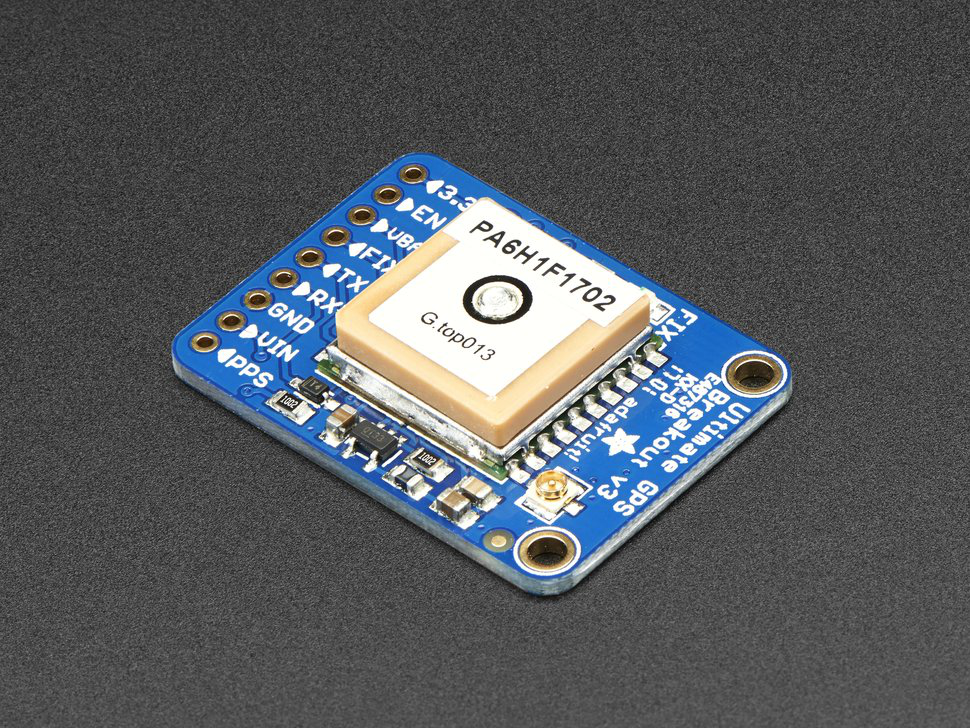 Figure 1: Ultimate GPS Breakout [3] |
![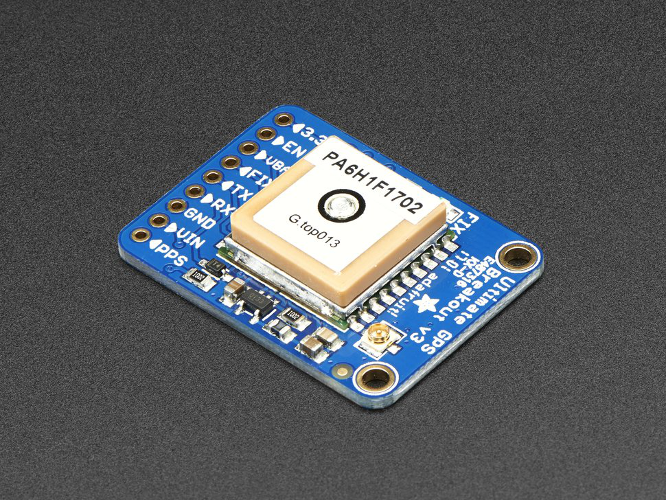Figure 1: Ultimate GPS Breakout [3]](https://cdn-shop.adafruit.com/970x728/746-11.jpg){kind=link}
|
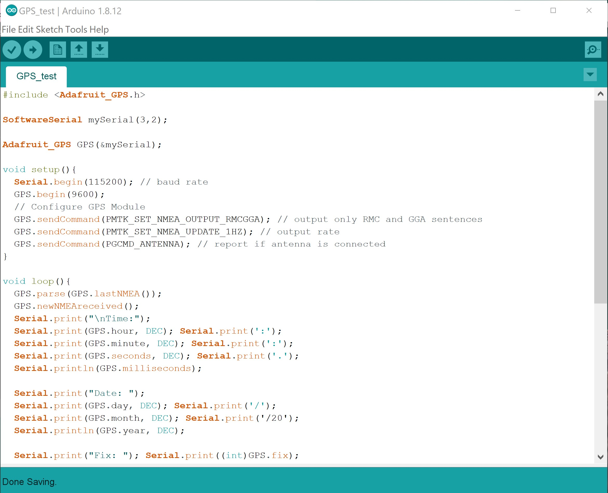 Figure 2: Experimental Setup With Arduino | A portion of an Arduino script is shown on the left that establishes working communication with the GPS module. The setup section
sets the baud rate and configures the GPS output. It then enters a loop as the GPS receives and digests data. GPS data is packaged in the form of National Marine
Electronics Association (NMEA) sentences [5]. Each sentence contains all of the data collected for a specific point in time. When the GPS receives an NMEA sentence
each variable must be extracted individually. As data for each of the individual variables is collected it is printed to the console output. Once the hardware portion is implemented, this will enable me to assess the accuracy of data received as well as mirror the display a goggle wearer will have in the final implementation of the project. |
Week 5:
Date: 9-25-2020Total hours: 16
Description of design efforts:
|
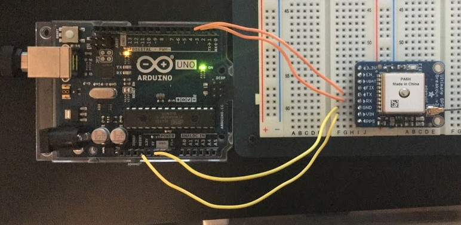 Figure 1: Arduino GPS Module Wiring |
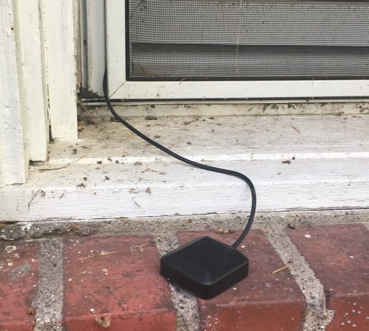 Figure 2: GPS Antenna Setup |
|
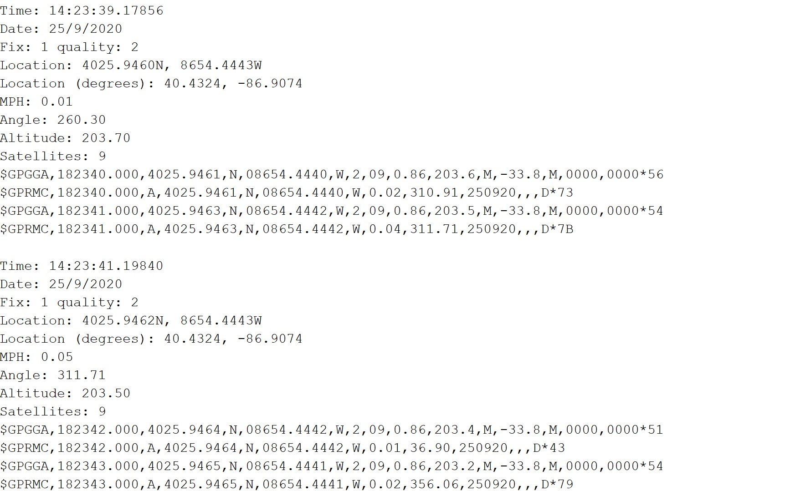 Figure 3: GPS Data Captured From Arduino Serial Monitor |
Week 6:
Date: 10-2-2020Total hours: 10
Description of design efforts:
The actual location data for this point is:
Latitude: 40.3680
Longitude: -86.8755
Altitude: 193m [6]
And the reported GPS data was:
Latitude: 40.3678
Longitude: -86.8742
Altitude: 195.1
Considering I took the measurements from the parking lot and could not go inside for the most accurate results, these numbers are quite acceptable. I configured the GPS to print an update on its current state every second and noticed that while the coordinates remained consistent, the altitude data would change a bit each time but remained within about two meters of the target value. For the future, I think altitude may need to be calculated as the average of several measurements.
I also wanted to make sure that the GPS was not lagging as it reported data. This would have been difficult to test using purely coordinate data because I didn't know what my coordinates should have been at every data point. I also didn't trust that comparing to another GPS would be guarantee unbiased results. I instead used speed as the metric to verify that the GPS was updating fast enough. In a car it was very easy to check the correct speed by looking at the odometer. While driving around, I quickly found out that the GPS was giving speed in knots and made that adjustment to my code.
Below is some footage from the excursion that shows the GPS in action. The first video in Figure 1 shows the location data from Igloo and Figure 3 shows the car's odometer compared to the GPS output. Figures 2 and 4 show screenshots from the videos to more easily read the data.
|
Figure 1: GPS Location Verification |
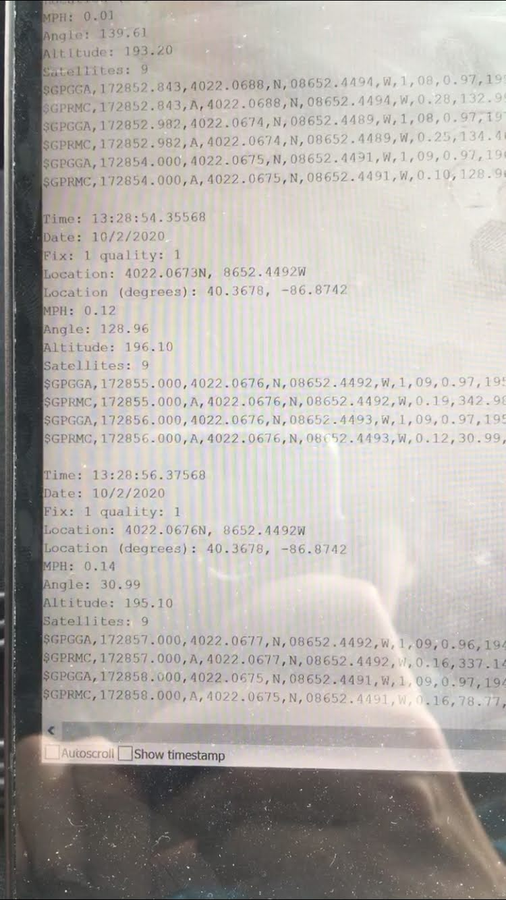 Figure 2: GPS Data Captured From Arduino Serial Monitor |
|
Figure 3: GPS Speed Verification |
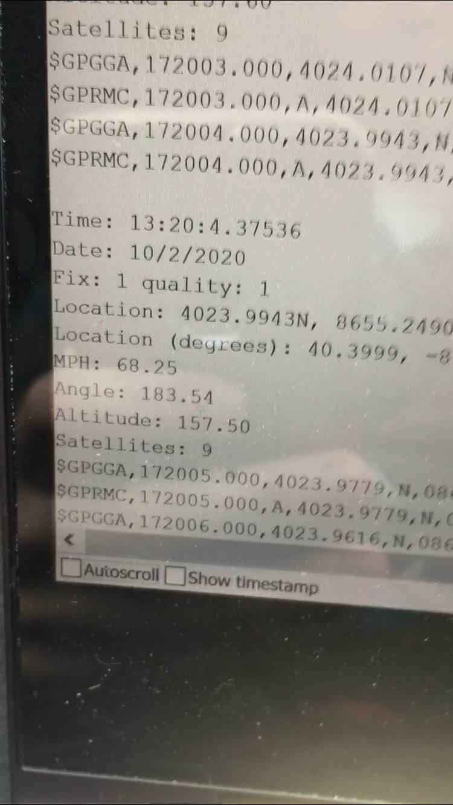 Figure 4: GPS Data Captured From Arduino Serial Monitor |
Week 7:
Date: 10-9-2020Total hours: 8
Description of design efforts:
The GPS module uses UART to connect to the microcontroller. Once it has acquired a satellite connection, it can begin to send transmit data. The data has to be parsed into data arrays. There are several types of NMEA senteces that the module will transmit that contain different assortments of data. For our purposes, all of the necessary data can be pulled from just two types, which simplifies things. Sentences are structured as a comma separated list, making it easy to split apart.
I also updated our product CAD model this week. As we have progressed further in the process of desiging our PCB, there were some physical changes to account for. Originally we were going to use two user push buttons for the on/off switch and the GPS trigger. While designing the PCB we decided to change the power button to a dip switch. The dimensions and general layout also changed through this process, so the size and positioning of the user interface was also adjusted.
|
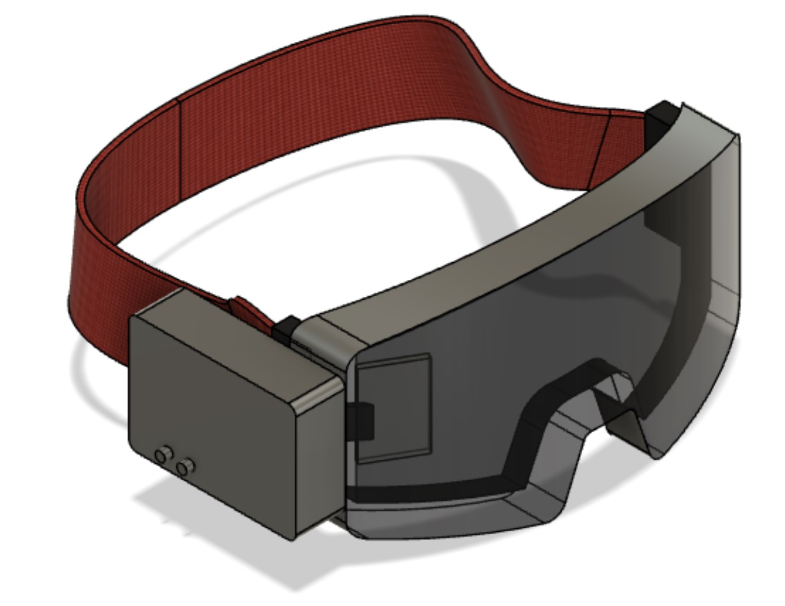 Figure 1: CAD model progress |
The next step for me is to actually use the STM32 microcontroller for the GPS implementation. I will be using the same hardware design with a push button to request data from the GPS. I anticipate that parsing to be more tedious moving from Python to C, but the process will hopefully go smoothly.
Week 9:
Date: 10-23-2020Total hours: 6
Description of design efforts:
|
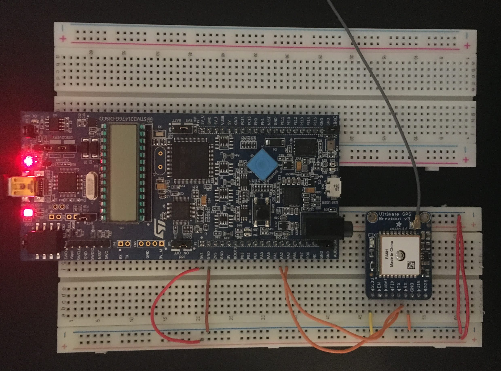 Figure 1: STM32L4 Discovery Board Wiring with GPS Module |
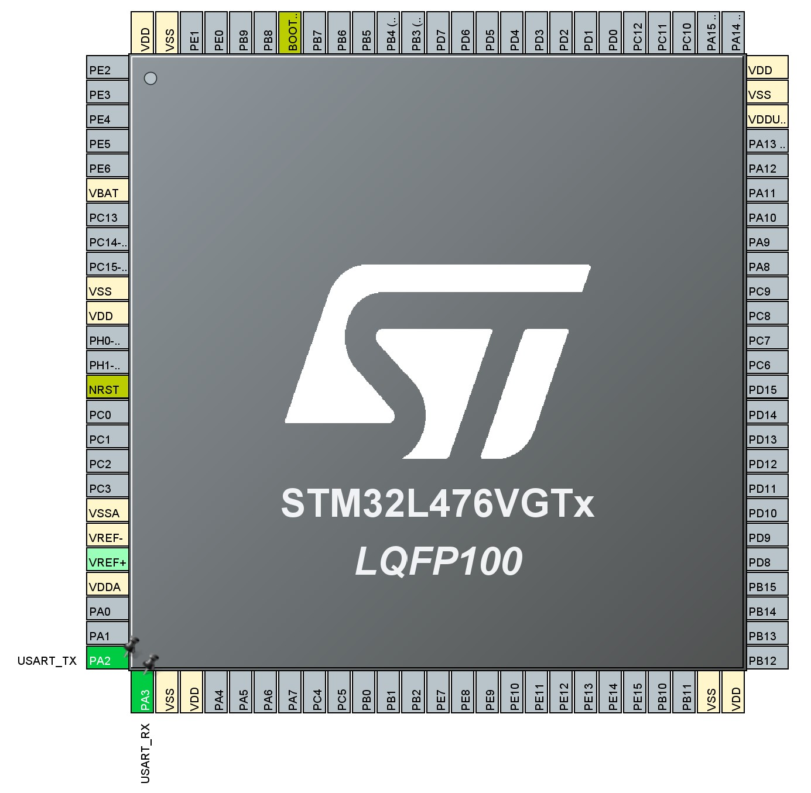 Figure 2: STM32L4 Pinout for GPS Test |
The plan for the coming weeks with this part of the project is to begin integration with some of the other components that have been tested individually. We will likely test the GPS with the IMU first because the IMU is being used to calculate velocity, which is one of our PSSCs. Then the GPS will also be integrated with the LoRa radio so that we can implement the location data request feature.
Week 10:
Date: 10-29-2020Total hours: 8
Description of design efforts:
I'm pretty confident that I am initializing the GPS correctly as a USART device and correctly configuring the necessary GPIO pins. I have also implemented handlers and initializers to enable the interrupts.
This is the code for initizliaing the GPIO pins:
|
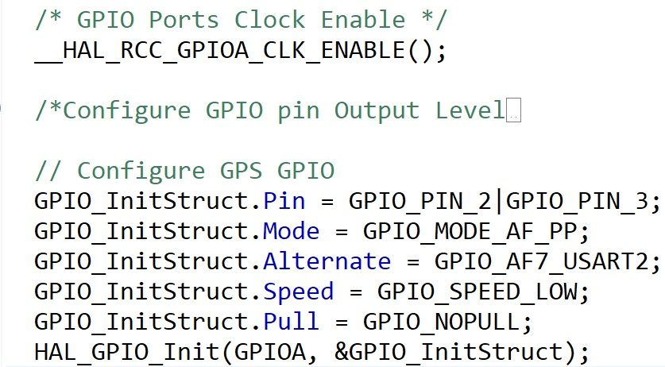 Figure 1: STM32 function to initialize GPIO |
This is the function that I'm calling for USART initialization:
|
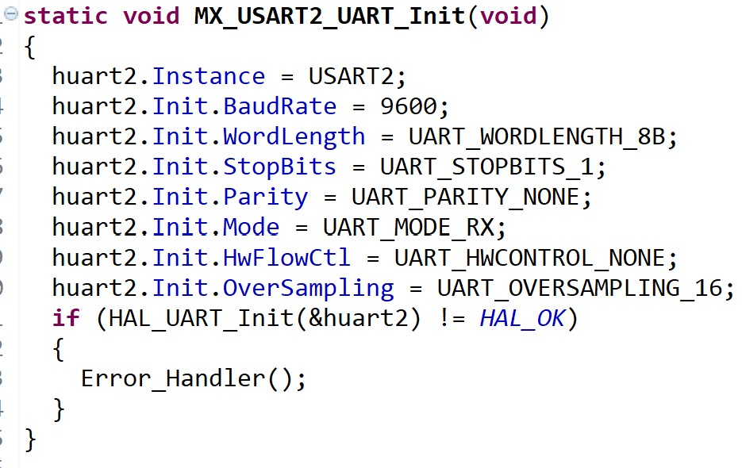 Figure 2: STM32 function to initialize USART2 |
I'll keep trying to debug the issue over the weekend and if I'm still stuck my next step will be to find a time to go to office hours next week. While searching the internet for a solution I found a potentially useful library for parsing the GPS data that would make my life a lot easier once I am getting data [7].
Week 11:
Date: 11-6-2020Total Hours: 12
Description of design effors:
|
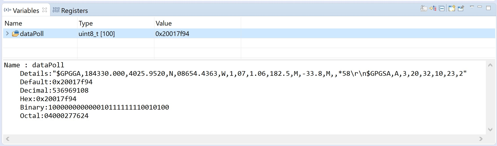 Figure 1: Variable showing polled USART GPS data |
Sources Cited:
[1] "GPS Basics," sparkfun.com. 2020. [Online] Available at: <https://learn.sparkfun.com/tutorials/gps-basics/all> [Accessed 9 September 2020].
[2] "Ultimate GPS Module," Adafruit Industries. 2020. [Online] Available at: <https://www.adafruit.com/product/790> [Accessed 8 September 2020].
[3] "Adafruit Ultiamte GPS Breakout," Adafruit Industries. 2020. [Online] Available at: <https://www.adafruit.com/product/746> [Accessed 15 September 2020].
[4] "Adafruit_GPS," GitHub. 2020. [Online] Available at: <https://github.com/adafruit/Adafruit_GPS> [Accessed 16 September 2020].
[5] "NMEA Data," GPSInformation.org. [Online] Available at: <https://www.gpsinformation.org/dale/nmea.htm#intro> [Accessed 16 September 2020].
[6] "Find Google Maps Coordinates," mapcoordiantes.net [Online] Available at: <https://www.mapcoordinates.net/en> [Accessed 2 October 2020].
[7] "nimaltd/GPS," GitHub. 2020. [Online] Available at: <https://github.com/nimaltd/GPS [Accessed 27 October 2020].